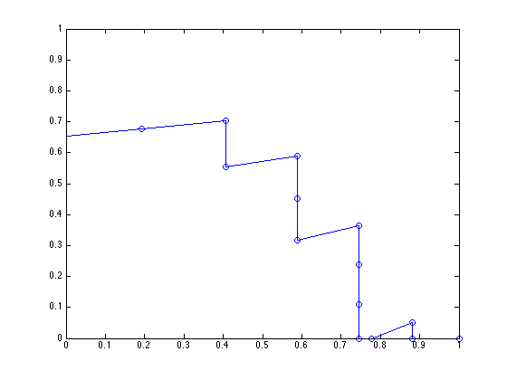

Precision-Recall-Gain curves
This example demonstrates how to create and plot Precision-Recall-Gain curves and how to calculate area under the curve. More information on Precision-Recall-Gain curves and how to cite this work is available at http://www.cs.bris.ac.uk/~flach/PRGcurves/.
Contents
Creating data
labels = [1 1 1 0 1 1 1 1 1 1 0 1 1 1 0 1 0 0 1 0 0 0 1 0 1] scores = 1-(1:25)/25
labels =
Columns 1 through 13
1 1 1 0 1 1 1 1 1 1 0 1 1
Columns 14 through 25
1 0 1 0 0 1 0 0 0 1 0 1
scores =
Columns 1 through 7
0.9600 0.9200 0.8800 0.8400 0.8000 0.7600 0.7200
Columns 8 through 14
0.6800 0.6400 0.6000 0.5600 0.5200 0.4800 0.4400
Columns 15 through 21
0.4000 0.3600 0.3200 0.2800 0.2400 0.2000 0.1600
Columns 22 through 25
0.1200 0.0800 0.0400 0
Creating the PRG-curve
prg_curve = create_prg_curve(labels,scores)
prg_curve =
pos_scores neg_scores TP FP FN TN
__________ __________ ______ ______ ______ ______
-Inf Inf 0 0 16 9
0.96 -0.96 1 0 15 9
0.92 -0.92 2 0 14 9
0.88 -0.88 3 0 13 9
0.84 -0.84 3 1 13 8
0.8 -0.8 4 1 12 8
0.76 -0.76 5 1 11 8
0.72 -0.72 6 1 10 8
0.68 -0.68 7 1 9 8
0.64 -0.64 8 1 8 8
0.6 -0.6 9 1 7 8
0.56 -0.56 9 2 7 7
0.52 -0.52 10 2 6 7
0.5104 -0.5104 10.24 2 5.76 7
0.48 -0.48 11 2 5 7
0.44 -0.44 12 2 4 7
0.4 -0.4 12 3 4 6
0.36 -0.36 13 3 3 6
0.32 -0.32 13 4 3 5
0.28 -0.28 13 5 3 4
0.24 -0.24 14 5 2 4
0.2 -0.2 14 6 2 3
0.16 -0.16 14 7 2 2
0.125 -0.125 14 7.875 2 1.125
0.12 -0.12 14 8 2 1
0.11111 -0.11111 14.222 8 1.7778 1
0.08 -0.08 15 8 1 1
0.0625 -0.0625 15 8.4375 1 0.5625
0.04 -0.04 15 9 1 0
0 0 16 9 0 0
precision_gain recall_gain is_crossing in_unit_square
______________ ___________ ___________ ______________
NaN -Inf 0 0
1 -25.667 0 0
1 -11.444 0 0
1 -6.7037 0 0
0.40741 -6.7037 0 0
0.55556 -4.3333 0 0
0.64444 -2.9111 0 0
0.7037 -1.963 0 0
0.74603 -1.2857 0 0
0.77778 -0.77778 0 0
0.80247 -0.38272 0 0
0.60494 -0.38272 0 0
0.64444 -0.066667 0 0
0.65278 0 1 1
0.67677 0.19192 0 1
0.7037 0.40741 0 1
0.55556 0.40741 0 1
0.58974 0.58974 0 1
0.45299 0.58974 0 1
0.31624 0.58974 0 1
0.36508 0.74603 0 1
0.2381 0.74603 0 1
0.11111 0.74603 0 1
0 0.74603 1 1
-0.015873 0.74603 0 0
0 0.77778 1 1
0.051852 0.88148 0 1
0 0.88148 1 1
-0.066667 0.88148 0 0
0 1 0 1
Calculating area under the PRG-curve
auprg = calc_auprg(prg_curve)
auprg =
0.4325
Plotting the PRG-curve
plot_prg(prg_curve)